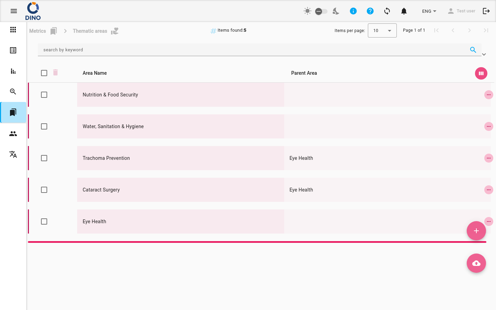

Managing Metric Values – Thematic Areas
The Thematic Areas page (accessible from the Metrics section) lets you organize your metric data by hierarchical categories. Here you can view, create, edit, and delete thematic areas, as well as filter and export the list.

What You See
- Breadcrumbs at the top show your current location in the application (e.g., Metrics > Thematic Areas).
- The main table lists all thematic areas, displaying columns such as Area Name, Parent Area, and (if configured) other attributes. You can customize visible columns by clicking the view_week icon in the header.
- A search bar and filter panel let you find areas by keyword, date range, or other metadata.
- The Export button (cloud_download) allows you to download the current list as a file.
- Two floating action buttons are available:
- + (Add New) – creates a new thematic area.
- cloud_upload – imports areas from an external file.
Working with Thematic Areas
Adding a New Thematic Area
- Click the + floating button.
- In the dialog that opens, fill in the required fields (e.g., Area Name, Parent Area).
- Click Create to save the new area.
Parent Area
To create a sub‑area, select a Parent Area from the dropdown. If left blank, the new area becomes a top‑level entry.
Editing an Existing Area
- Find the area you want to change in the table.
- Click the edit icon (pencil) in the row’s actions column.
- Modify the fields in the dialog and click Save.
Viewing Details
- Click the visibility icon to open a read‑only dialog showing all fields of the area.
- You can also click on a row to expand it and reveal any child areas (if the hierarchy is configured).
Deleting an Area
- Click the delete icon (trash can) in the row’s actions column.
- Confirm the deletion in the dialog that appears.
Delete Considerations
Deleting a parent area may affect child areas. Dino will warn you if there are associated items. Proceed with caution.
Searching and Filtering
- Use the keyword search field at the top of the list to filter areas by name.
- Open the filter panel by clicking the expand arrow. You can set:
- From date / To date – filter by creation date.
- Additional filters (e.g., metric‑specific fields) – if your instance has custom attributes.
- Apply a filter preset (if available) to quickly load saved filter combinations.
Exporting the List
- Click the cloud_download button in the toolbar.
- Choose the export format (e.g., CSV, Excel).
- The file will be generated with the currently visible (filtered) set of areas.
Bulk Actions
To perform actions on multiple areas at once (e.g., delete several), select the checkboxes next to the rows. The bulk action buttons will appear in the column header. Currently, the Thematic Areas screen supports bulk delete.
Navigating with Breadcrumbs
The breadcrumbs show your current location (e.g., Metrics > Thematic Areas). Click any breadcrumb link to jump to a higher level.